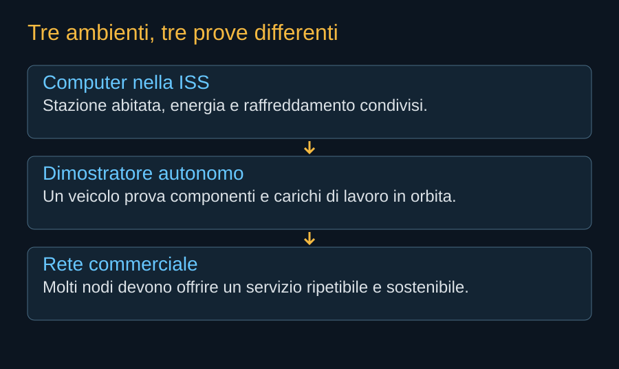

I veicoli spaziali hanno sempre avuto bisogno di elaborare informazioni. Misurare l’assetto, controllare un motore, interpretare un sensore e scegliere una manovra richiedono calcolo. La presenza di un computer in orbita precede quindi Starmind di molti decenni. La novità proposta riguarda la destinazione di quel lavoro: un satellite diventerebbe un’infrastruttura che vende capacità informatica a utenti esterni alla propria missione.
Il computer che fa vivere il veicolo
L’avionica viene progettata per conoscere e governare il satellite. Ha compiti, tempi e condizioni di guasto legati alla sicurezza della missione. Un computer destinato ai clienti deve invece gestire software e carichi variabili, spesso con componenti che cercano la massima prestazione e vengono sostituiti rapidamente sul mercato terrestre. Le due funzioni possono condividere tecnologie, ma conviene mantenerle distinguibili: il sovraccarico di un cliente non deve impedire al veicolo di orientarsi o comunicare un’emergenza.
Anche l’elaborazione dei dati scientifici a bordo è un precedente importante. Se uno strumento produce più informazioni di quelle che può scaricare, selezionare, comprimere o riconoscere eventi prima della trasmissione aumenta l’utilità della missione. In questo caso il calcolo viene portato vicino ai dati. Un cloud orbitale per utenti terrestri affronta spesso il percorso inverso: deve ricevere dati e modelli dalla Terra prima di poter lavorare.

La lezione di Spaceborne Computer
Il programma HPE Spaceborne Computer, sviluppato con la NASA, portò hardware commerciale sulla ISS nel 2017. La prima missione tornò sulla Terra nel 2019. Spaceborne Computer-2, arrivato nel 2021, ampliò il lavoro su elaborazione locale e intelligenza artificiale. Questi esperimenti affrontavano una domanda concreta: quanto del patrimonio informatico commerciale si possa usare nello spazio, e con quali tecniche per gestire errori e degrado.
La stazione offriva però un ambiente particolare. Il computer era all’interno di un volume abitabile, con servizi elettrici e termici condivisi e la possibilità di interventi dell’equipaggio. Un satellite autonomo deve portare con sé alimentazione, radiatori, controllo e tutti i mezzi per continuare a funzionare senza una persona davanti al rack. La prova sulla ISS è un passaggio reale nella storia del calcolo spaziale; la sua architettura non può essere trasferita integralmente a Starmind.


Dal componente al servizio
Un dimostratore può eseguire correttamente un modello e verificare che alcuni dispositivi sopravvivano al lancio. È un risultato prezioso, perché sostituisce ipotesi con misure. Non stabilisce ancora quanto costi offrire lo stesso lavoro per anni, né come si comporti una rete quando un nodo non è disponibile. Sono domande diverse e richiedono una quantità diversa di esperienza.
Il passaggio industriale somiglia a quello compiuto dalle telecomunicazioni satellitari. Un collegamento riuscito fra due punti mostrava la possibilità fisica; una rete per molti clienti chiedeva capacità, continuità e gestione degli accessi. Nel calcolo si aggiunge la correttezza del risultato. Il cliente deve sapere non soltanto che la macchina ha risposto, ma che ha eseguito il lavoro richiesto con la qualità concordata.
Un patrimonio, senza scorciatoie
Starmind può ereditare anni di elettronica spaziale, produzione satellitare e ricerca sulle comunicazioni. Può utilizzare componenti più potenti di quelli scelti in molte missioni tradizionali. La sfida consiste nel combinarli senza perdere affidabilità e senza far crescere troppo massa, superfici e costo. I precedenti permettono di formulare meglio le prove, non di saltarle.
Questa distinzione evita anche una storia costruita su primati troppo ampi. “Primo computer nello spazio”, “prima IA in orbita” e “primo servizio di calcolo distribuito” non indicano lo stesso traguardo. Nel libro ogni risultato viene descritto per ciò che prova, con il suo ambiente e il suo perimetro.
Fonti pubbliche e tracce
- NASA, Spaceborne Computer. Ricostruzione del programma e della prima missione 2017–2019. L’ambiente interno della ISS è diverso da quello di un satellite autonomo.
- NASA, esperimenti della missione NG-15. 2021: Spaceborne Computer-2 e calcolo locale. Non è una prova del costo di un cloud orbitale.
- NASA, effetti delle radiazioni sull’avionica. Dose totale, eventi singoli e tecniche di mitigazione. Non determina il tasso di guasto dei processori scelti per AI1.